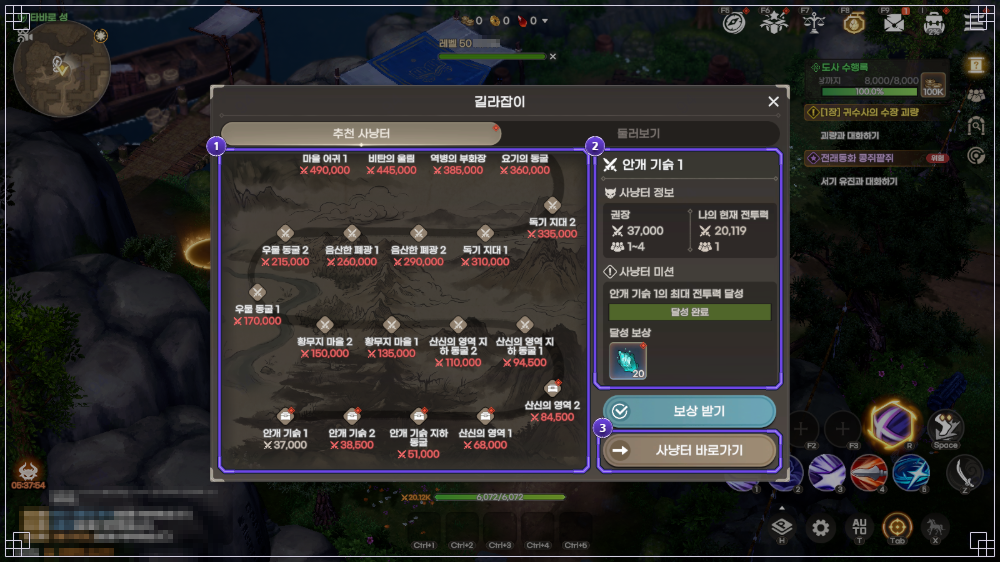
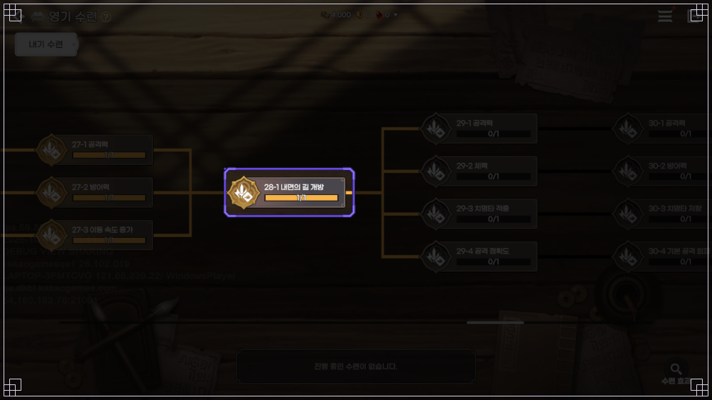
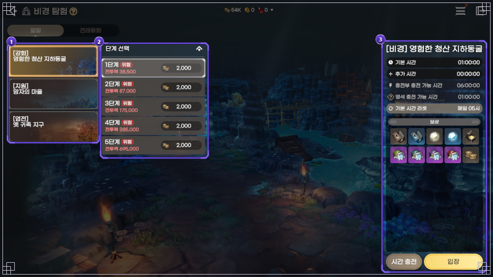
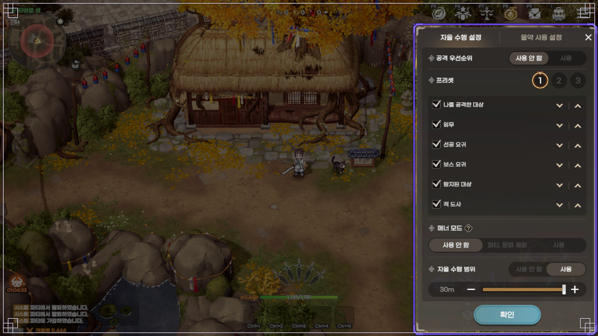
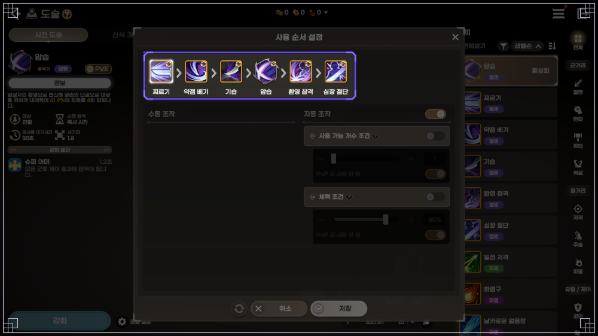
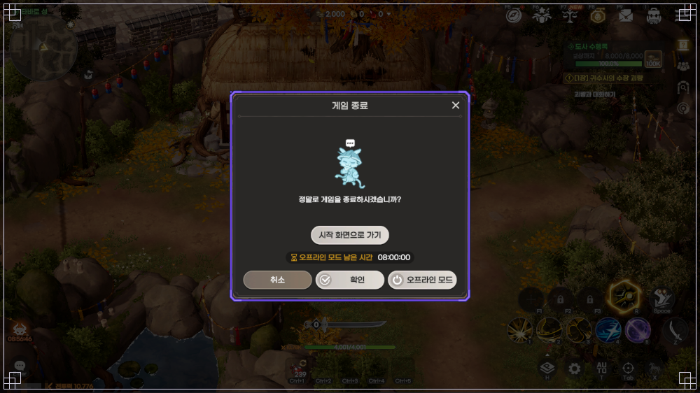
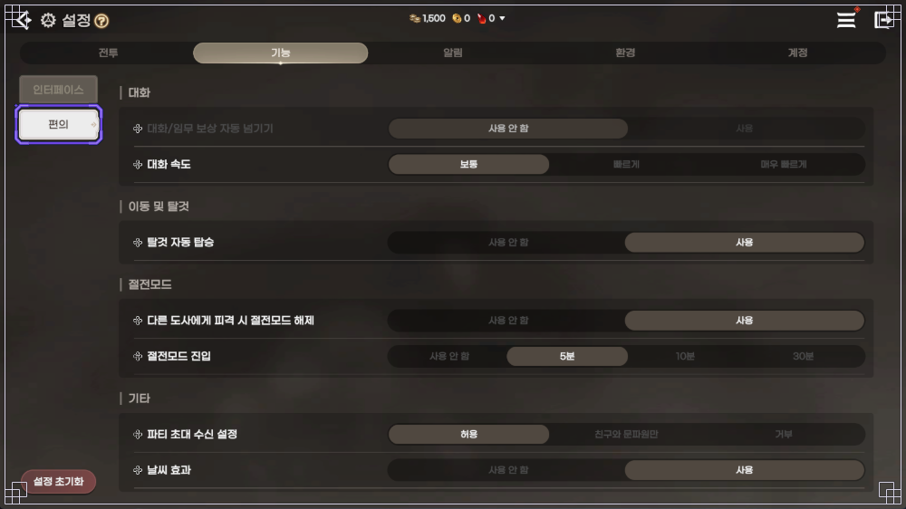
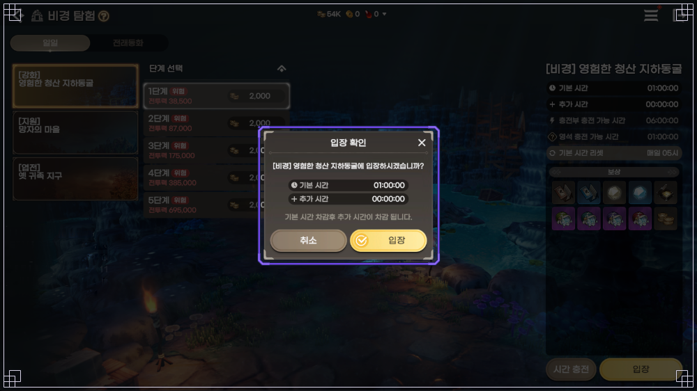

도깨비의세계 전투력 올리는 방법과 자동사냥 효율 세팅, 오프라인 모드 켜는 법까지 꿀팁 정리
도깨비의세계를 하다 보면 전투력은 제자리인데 사냥터는 점점 버거워지는 날이 오는데요. 저는 그럴 때마다 성장 메뉴와 자동 사냥 설정을 한 번씩 다시 손봤거든요. 그걸 권장 전투력 37,000~135,000 구간에 맞춰 10월 14일 점검까지 반영해 정리했으니 결론부터 보여드리겠습니다.
| 전투력 올리기 | 자동 사냥 세팅 |
|---|---|
| 길라잡이 권장 전투력으로 구간 잡기 | 설정 네 군데 먼저 맞추기 |
| 영기 수련 끊기지 않게 걸어 두기 | 사냥터는 권장 전투력으로 고르기 |
| 임무·보스·분해로 재료 모으기 | 오프라인은 시험해 보고 켜기 |
도깨비의세계 전투력 올리는 방법, 뭐부터 손대면 되나요?
전투력은 길라잡이 권장 전투력으로 구간을 잡고, 영기 수련을 끊지 않고 돌리면서 임무와 보스로 재료를 채우면 올라가요.

길라잡이 추천 사냥터 지도예요, 사냥터마다 권장 전투력이 적혀 있어요. 그림 속 내 전투력 수치는 촬영 당시 값이에요
이미지 출처: 도깨비의세계 공식 포럼 TIP 8063(길라잡이)
길라잡이는 권장 전투력을 채우면 달성 보상을 캐릭터당 한 번 받고 사냥터 바로가기도 엽전 없이 쓸 수 있거든요. 그래서 아래 숫자가 사냥터 이정표가 됩니다.
| 권장 전투력 | 사냥터 | 달성 보상 |
|---|---|---|
| 37,000 | 안개 기슭 1 | 요혼석 20개 |
| 68,000 | 산신의 영역 1 | 요혼석 20개 |
| 135,000 | 황무지 마을 1 | 영웅 강화 재료 선택 상자 5개 |
위 숫자는 10월 7일 길라잡이 안내 기준이고, 10월 14일 점검 뒤에는 진행도가 낮은 콘텐츠부터 안내하는 [맞춤 추천] 탭이 생겼으니 길라잡이부터 열어 보면 편해요.
[맞춤 추천] 탭에는 진행도가 낮은 콘텐츠가 먼저 떠요
본편이 막히면 서사 임무로 넘어가는데, 메뉴(三) → 임무 → 서사 탭에서 외전 임무의 권장 전투력을 미리 볼 수 있습니다. 영기 수련은 내기, 외기, 진기 순서로만 이어지는데 걸리는 시간이 실제 시간이잖아요. 그래서 수련이 끝나 있으면 접속을 끊기 전에 다음 단계를 시작해 두는 게 편하답니다. 문파에 가입하면 문파원 도움으로 시간을 줄일 수 있는데 하루 최대 100회예요.

영기 수련 트리의 28-1 '내면의 길 개방' 노드예요, 여기를 끝내면 내면의 길이 열려요
이미지 출처: 도깨비의세계 공식 포럼 가이드 7843(내면의 길)
기운 발현은 10월 14일 기준으로 알려진 문제에 연출 중에도 [발현] 버튼이 눌려 연속으로 진행되는 오류가 올라와 있어서, 연출이 끝난 뒤에 누르는 게 깔끔해요. 재료는 이 세 곳에서 챙기시면 됩니다.
- 장비 분해 희귀 등급 이상 장비를 분해하면 엽전을 뺀 일반 강화 재료를 100% 돌려받아요
- 필드 보스 월·수·금·일은 산신 산군대호, 화·목·토는 해골장군이 저녁 8시부터 5분간 나와요. 피해량 보상은 참여한 모든 도사에게 누적 피해량 단계별로 나가서 저는 한 번은 꼭 들어가요
- 비경 탐험 강화 비경 '영험한 청산 지하동굴'은 1단계 권장 전투력이 38,500이고 장비 강화 비법서·가호의 정수·도술 강화 요령서가 나와요

비경 탐험 화면이에요, 단계별 권장 전투력과 기본 시간이 한 화면에 보여요
이미지 출처: 도깨비의세계 공식 포럼 가이드 7943(비경 탐험)
도술은 10월 21일 정기 점검에서 강화·돌파가 초기화될 예정이라, 영기 수련 5-1로 슬롯만 늘려 두고 강화엔 크게 쓰지 않는 게 좋겠네요.
도깨비의세계 자동사냥 돌리는 법, 어떤 설정부터 맞추나요?
자동 사냥은 자율 수행 설정·물약 사용 설정·도술별 자동 조작·자동 획득 등급 네 군데를 먼저 맞추고, 사냥터는 권장 전투력으로 고르면 돼요.

자율 수행 설정 창이에요, 공격 우선순위·매너 모드·자율 수행 범위가 한 화면에 있어요. 화면 속 선택 값은 예시예요
이미지 출처: 도깨비의세계 공식 포럼 가이드 7833(주요 UI 소개)
- 자율 수행 설정 프리셋 1~3과 공격 우선순위 여섯 대상의 순서, 매너 모드, 자율 수행 범위를 정해요. 매너 모드는 다른 도사가 공격 중인 요귀를 건드리지 않게 해 줘서 붐비는 곳에선 켜 둬요
- 물약 사용 설정 사냥 때 체력 물약을 자동으로 쓸 체력 비율과 등급별 사용 순서를 정해요. 물약은 주로 엽전으로 사다 보니 비율을 낮게 두고 시작하게 되네요
- 도술별 자동 조작 도술마다 수동·자동을 고르고 자동이면 체력 조건(예: 체력 80% 이하)과 사용 가능 개수 조건을 걸어요. 회복·보호막 도술에는 체력 조건부터 걸어 두는 식이에요
- 자동 획득 등급 설정 > 전투 > 획득에서 장비 아이템과 물약을 모두·희귀 이상·영웅 이상·전설 이상으로 나눠 받아요

도술 사용 순서 설정 창이에요, 자동 조작을 켜면 체력 조건을 걸 수 있어요. 화면 속 수치는 예시예요
이미지 출처: 도깨비의세계 공식 포럼 가이드 7834(도술)
참고로 자동 반격은 이동·지면 터치·도술 직접 사용을 하면 중단되고 그 전투가 끝날 때까지 다시 시작되지 않습니다. 물약 없이 버티는 사냥터는 길라잡이 권장 전투력 구간에서 먼저 돌려 보고, 효율은 10분으로 판단하지 말고 20~40분은 돌려 본 다음에 비교하는 게 좋죠.
사냥 보상은 기여도가 가장 높은 도사에게 가니까, 도착 지점이 붐비면 조금 벗어난 곳이나 다른 사냥 공간으로 옮기는 게 나아요. 인원이 가득 찬 지역은 다른 채널로 배정되는데, 저는 영기 수련 9-1을 열어 두고 도깨비 수련장에 들어갔다 나오며 채널을 바꿔 봐요. 사람마다 방법이 달라서 인게임에서 한 번 해 보세요.
도깨비의세계 오프라인 모드 켜는 법, 시간은 얼마나 쓸 수 있나요?
오프라인 모드는 메뉴 [나가기]를 눌러 뜨는 '게임 종료' 창에서 [오프라인 모드]를 누르면 켜지고, 게임을 꺼도 그 자리에서 하루 최대 8시간 자동 사냥이 이어져요.

메뉴 [나가기]를 누르면 뜨는 '게임 종료' 창이에요, [오프라인 모드] 버튼 위에 남은 시간이 보여요
이미지 출처: 도깨비의세계 공식 포럼 가이드 7833(주요 UI 소개)
- 이용 시간 하루 최대 8시간이고, 성장 멤버십이면 일일 제한이 풀려서 접속할 때마다 최대 8시간씩 쓸 수 있어요
- 초기화와 범위 출시 전 안내 기준으로는 매일 05:00에 초기화되고, 필드 사냥 말고 다른 콘텐츠는 대부분 직접 들어가야 해요
- 알려진 문제 10월 14일 기준 목록에는 오프라인으로 넘어갈 때 자동 조작을 꺼 둔 도술이 쓰이고 사냥 범위가 마지막 위치 기준으로 바뀌는 현상이 올라와 있어요
- 점검 점검이 시작되면 게임이 강제 종료될 수 있어서, 점검 시간과 겹치게 켜 두지는 않아요
그래서 저는 오프라인 전에 한 단계 안전한 사냥터에서 몇 분 먼저 돌려 보고, 죽지 않는지 물약이 평소보다 빨리 줄지 않는지 본 뒤에 켜요. 절전 모드는 켜 둔 채 쓰는 기능으로, 10월 14일 점검부터 메인 화면에 단축 버튼이 생겼고 설정 > 기능 > 편의에서 진입 시간(5분·10분·30분)과 피격 시 해제를 정할 수 있답니다.

설정 > 기능 > 편의 화면이에요, 절전모드 진입 시간과 피격 시 해제 옵션이 여기 있어요
이미지 출처: 도깨비의세계 공식 포럼 가이드 7747(설정)
단축 버튼으로 절전 모드에 들어간 화면이에요
도깨비의세계 전투력 올릴 때 놓치기 쉬운 것들
- 거래소 일반·희귀 장비는 한 번이라도 강화하거나 각성하면 거래소에 못 팔아요. 팔 장비는 강화 전에 정해 두세요
- 비경 시간 기본 시간은 모든 비경을 합쳐 하루 1시간이라 한 곳에서 쓰면 다른 곳 시간이 줄고, 매일 05시에 초기화돼요

비경 입장 확인 창이에요, 기본 시간을 먼저 쓰고 그다음에 추가 시간이 차감돼요
이미지 출처: 도깨비의세계 공식 포럼 가이드 7943(비경 탐험)
자주 묻는 질문
Q. 도깨비의세계 자동 사냥이 모바일에서 끊기는 이유가 뭔가요?
Wi-Fi와 셀룰러 데이터가 서로 전환될 때 자동 사냥과 매칭, 접속 대기열 연결이 끊길 수 있다고 알려져 있어요. 연결이 바뀐 뒤엔 자동 사냥이 켜져 있는지 보세요.
Q. 자동 사냥을 오래 돌렸더니 프레임이 떨어져요, 어떻게 하나요?
장시간 유지하면 프레임이 점차 떨어질 수 있고, 게임을 재시작하면 일시적으로 나아진다고 안내돼 있어요. 설정 > 환경 > 그래픽의 '저사양 모드'는 재시작한 뒤에 적용돼요.
Q. 절전 모드가 설정한 시간이 지나도 저절로 안 켜져요.
10월 14일 기준 알려진 문제 목록에 같은 현상이 올라와 있어요. 그때는 메인 화면의 절전 모드 단축 버튼이나 메뉴로 직접 켜면 돼요.
도깨비의세계 전투력 올리는 제 하루 순서
저는 하루를 이 순서로 돌려요.
- 접속하면 영기 수련이 끝나 있는지 보고, 끝났으면 다음 단계를 시작해요
- 일일 임무 10번(주간 임무는 주 10번)을 챙기고 길라잡이에서 [보상 받기]가 켜졌는지 봐요
- 비경 탐험은 하루 기본 1시간 안에서 들어가요
- 저녁 8시에는 그날 요일의 필드 보스에 한 번 참여해요
도술은 10월 21일 초기화 이후 달라지는 게 있으면 다시 정리해서 올릴게요~
✔ 도깨비의세계 같이 보기 좋은 내용
· 도깨비의세계 무기 추천, 무기 5종 고르는 기준과 장비 강화 개방 돌파 각성 순서
· 도깨비의세계 가호 세트 효과 정리, 토끼 연꽃 도깨비 나비 봉황 등급별 수치와 세트 점수 10·30·50·70
· 도깨비의세계 전래동화 꼭 해야 하는 이유, 별의 조각 얻는 법과 미누 상점 교환
참고한 곳
· 도깨비의세계 공식 포럼 — 빠른 성장의 지름길, 길라잡이를 활용하세요!
· 도깨비의세계 공식 포럼 — 주요 UI 소개 가이드
· 도깨비의세계 공식 포럼 — 10월 14일 업데이트 안내